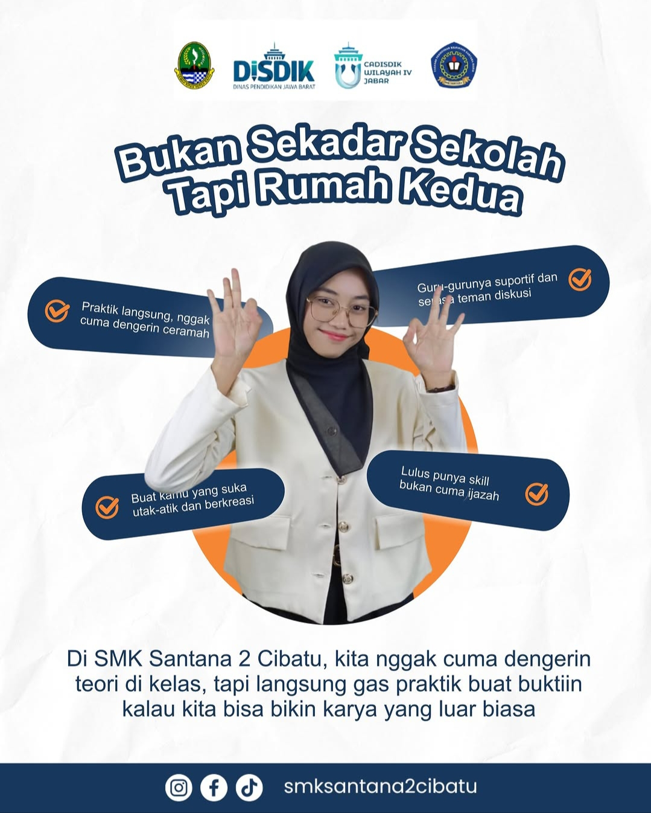

SMK Santana 2 Cibatu bukan sekedar tempat belajar teori, Kami hadir sebagai lembaga pendidikan kejuruan yang berfokus pada penyelarasan kurikulum dengan kebutuhan Dunia Usaha dan Dunia Dunia Industri. Dengan memadukan kurikulum nasional dan standard dunia kerja, kami memastikan setiap siswa memiliki "senjata" yang mumpuni saat lulus nanti. Kami juga tidak hanya mencetak lulusan yang siap kerja, tapi juga wirausahawan muda yang siap bersaing di era digital.
Mencetak insan terampil, berkarakter, beriman, bertakwa, dan berwawasan global yang siap bekerja secara profesional dan mampu berwirausaha.
Menyelenggarakan pendidikan untuk menghasilkan lulusan yang memiliki sikap sosial dan spiritual yang baik, memiliki pengetahuan dan keterampilan yang baik, mampu berwirausaha secara mandiri, siap bekerja secara profesional ditataran ragional, nasional dan internasional.